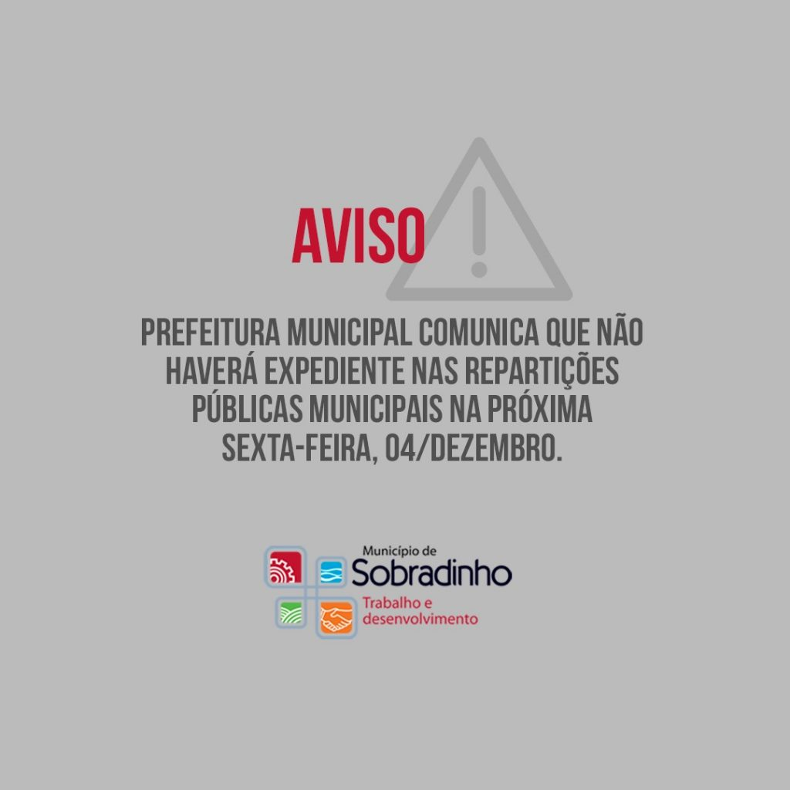

1º de dezembro é dedicado á luta contra a AIDS
O Dia Mundial de Luta Contra a AIDS foi internacionalmente definido durante Assembleia da Organização Mundial de Saúde, em outubro de 1987, com apoio da ONU. […]
Última atualização há 1 semana atrás

Prefeitura Municipal comunica que não haverá expediente nas repartições públicas municipais na próxima sexta-feira, 04
A Prefeitura Municipal de Sobradinho considerando as medidas de isolamento social na prevenção, controle e contenção de riscos, danos e agravos à saúde pública, a fim […]
última atualização há 3 dias atrás